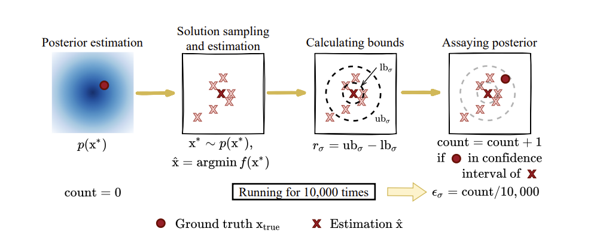
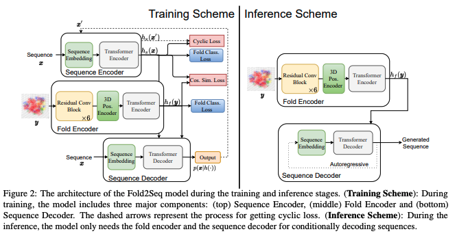
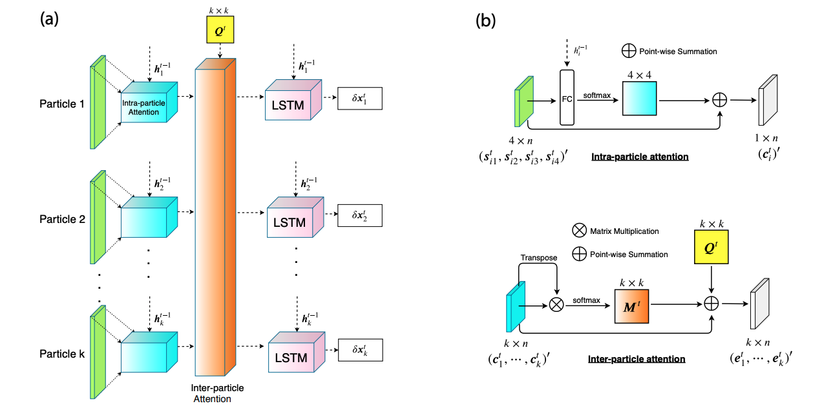
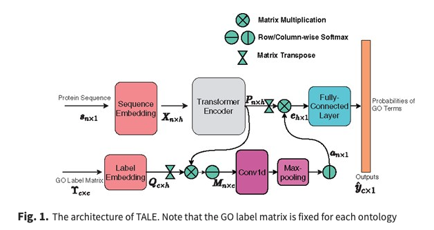

NEWS
- Apr 2026 Muse Spark is now live — a meaningful early milestone for the team at Meta Superintelligence Lab!
SELECTED PAPERS
-
Bayesian Modeling and Uncertainty Quantification for Learning to Optimize: What, Why, and How
International Conference on Learning Representations (ICLR), 2021

-
Fold2Seq: A Joint Sequence(1D)-Fold(3D) Embedding-based Generative Model for Protein Design
International Conference on Machine Learning (ICML), 2021

-
Learning to Optimize in Swarms
Advances in Neural Information Processing Systems (NeurIPS), 2019

-
TALE: Transformer-based Protein Function Annotation with Joint Sequence-Label Embedding
Bioinformatics, 37(18), 2021

ABOUT
I received my Ph.D. in Electrical Engineering from Texas A&M University and my B.S. in Applied Physics from the University of Science and Technology of China.
Full publication list and prior work available in my CV.